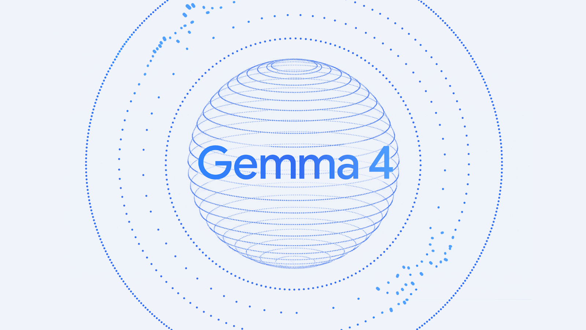

Executive Summary
This article looks at where the training data NVIDIA opened alongside its model files came from. Nemotron 3.5 Super VL, announced on October 15, is an open model anyone can download, and the eleven datasets used to tune it were released at the same time. Opening the weights while keeping the data closed is the industry habit, so opening the data at all is a welcome move.
Open the largest of the eleven, a set of 3,850,582 records, and the answers inside it were not written by an NVIDIA model. They came from models built by Moonshot AI, Google and Alibaba. The license printed on the dataset card is a single line, OpenMDW-1.1, and three different sets of terms sit behind that line. Open all three and none of them leaves a condition on a model trained with this data. That answer is not in the license texts, though: for one of them it took a discussion thread in the repository to find.
Sections 1 through 4 follow what is written in the dataset cards, the technical report, the published license documents and a repository discussion thread. Section 5, which asks how far the receiving side should be able to trace a dataset's lineage, is this article's own reading.
Key Numbers
The first two are the size of what NVIDIA opened. The last two are what turned up once it was open.
Source: Hugging Face dataset card, NVIDIA technical report (October 14, 2026), and a full census of the public repositories (orcarouter.ai, October 2026).
3,850,582
Records in the largest set opened
Instruction following and chat, 80.74GB before compression
11 sets
Training data released with the weights
Posted over three days, October 12 to 15
0 sets
Filled with answers from NVIDIA's own model
All five that name the model behind them name another company's
None of three
Conditions that follow into a model trained on this data
Only two of the three say so in the license text itself
What Came Out Alongside the Weights
Nemotron 3.5 Super VL is the open model NVIDIA announced on October 15. It holds 120 billion parameters in total, and 12 billion of them actually run when it handles a single question, because the model keeps many experts and wakes only the ones it needs. It reads text and images together, and a text-only sibling, Nemotron 3.5 Lightning, arrived the same day. The weight files had already been sitting on Hugging Face three days earlier, on October 12.

The phrase NVIDIA used at the announcement was that it was opening the weights, the data and the recipe together. That means not only the model files but the data used to tune the model after training, and the procedure as well. NeMo Gym, its reinforcement learning environment, opened with them. The goal was stated plainly: let a company retrain the model on its own data in its own data center and own the result. The adopters named were Skydance, EY, Ramp, CrowdStrike, Perplexity and Salesforce.
On performance, NVIDIA reported 51.78% on SWE-bench Pro, a set of software repair tasks, and said the model beat the larger Nemotron 3 Ultra while running about 4.6 times fewer parameters at a time. The announcement also claimed an edge over Anthropic's Opus 5 and OpenAI's GPT 6.1 Sol on agent work. Those comparisons were run by NVIDIA itself, and on Terminal-Bench 2.1, a terminal-task evaluation, it has been pointed out that the number in the technical report and the number on the model card point in different directions.
Performance is not what this article is after. Opening the weights while closing the data is the current habit, so opening the data lets outsiders read what is inside. Once it could be read, something came into view.
Inside the 3.85 Million Records
The largest of the eleven is Nemotron-SFT-Instruction-Following-Chat-v4. It holds 3,850,582 records and comes to 80.74GB. Inside, it splits three ways: 266,190 records of practice at matching a requested answer length, 914,716 of general conversation, and 2,669,676 of multi-turn exchanges that follow instructions. This is the material used to make a model do what it is told.
Building data like this is simple. You put questions to a model that is already good, keep the answers, and use the question-and-answer pairs as a textbook for a new model. The side that supplies the answers is called the teacher model. It is cheaper and faster than having people write every line by hand, and by now none of this is unusual.
What is unusual is that the dataset card says who the teachers were. There are three of them: Moonshot AI's Kimi-K2.6, Google's Gemma4-E4B-it and Alibaba's Qwen3.5-397B-A17B. NVIDIA's own Nemotron is not in that list. Mixed in with those are WildChat-1M, real conversations between people and chatbots collected and released by the Allen Institute for AI, and LMArena preference records, where people picked which model's answer was better. The first is published under ODC-By 1.0, the second under CC-BY-4.0. Neither stops you from using the material, but both ask you to credit the source, so two obligations exist at this point already.
The license at the top of the dataset card, though, is a single line: OpenMDW-1.1. The card also carries a note telling users to inspect the contents themselves, review the applicable licenses and judge whether the data suits their purpose. NVIDIA knows more than one thing is mixed in, and it has said so. What that note does not say is what is mixed in and which conditions come with it.
Laying out where each of those pieces entered produces the diagram below. The further left, the earlier the material; the far right is the model that will be trained on this data. The point is that the license differs from box to box, and the dataset card shows only one of those boxes.
Not One of the Eleven Names NVIDIA's Own Model
One dataset on its own could be a coincidence. The analysis blog Orcarouter went through all eleven repositories that appeared on NVIDIA's account between October 12 and 15. Five of them record the model that produced their answers, and all five point to a model from outside NVIDIA. Not one of the eleven lists NVIDIA's own Nemotron as the teacher.
Of the remaining six, one states that it was built by rule rather than by a model, and five carry no note at all. No note does not mean no outside model was used. It means there is no way to tell. For anyone trying to trace lineage, that is the harder case, not the easier one. The table below lists the five that name a teacher in order of size and groups the rest on the last row.
| Dataset | Records | Use | Model that wrote the answers |
|---|---|---|---|
| Instruction-Following-Chat-v4 | 3,850,582 | Chat and instruction following | Kimi-K2.6, Gemma4-E4B-it, Qwen3.5-397B-A17B |
| Agentic-v4 | 634,664 | Tool calling | Qwen3.5-397B-A17B, GLM-5.2 |
| RL-Finance-Tool-Calling-v1 | 90,307 | Reinforcement learning for finance tool calls | Qwen3.5-397B-A17B, DeepSeek-V4-Pro |
| Finance-Document-Grounded-Reasoning-v1 | 63,056 | Reasoning grounded in filings | Qwen3.5-397B-A17B, DeepSeek-V4-Pro |
| Long-Context-Translation-PG19-v1 | 4,335 | Long-form translation | DeepSeek V4 Flash |
| The other six | 6,000 to 100,000 | Chemistry reasoning, fairness, long-context transduction and others | Five carry no note. One states it was built by rule, without a model. |
▲ All eleven post-training repositories posted to NVIDIA's account between October 12 and 15, 2026. Source: reconstructed from each Hugging Face dataset card and Orcarouter's full census (October 2026)
The technical report says the same thing about itself. The sentence stating that the chat data was refreshed with recent Qwen, Kimi and Gemma responses sits in the chat and safety sections. Mathematical proof solutions were built with DeepSeek V4 Pro, and competitive programming problems with GLM-5.2. In the stage where the model is tuned to human preference, Gemma 4 31B-it served as the reference instead of another Nemotron, and gpt-oss-120b, the model whose weights OpenAI published, was used to filter financial data. This looks closer to a policy than to a one-time choice.
The smaller findings from the census are worth writing down too. For two of the financial datasets, the license value the Hugging Face API returns is "other" while the description inside the repository says "openmdw-1.1". A tool that filters datasets by license will read two different values for the same data. The labeling is uneven in another way as well. Most sets carry the single OpenMDW-1.1 line, but the chemistry reasoning data also carries CC-BY-SA-4.0 and the long-form translation data also carries Apache 2.0. The first of those asks you to attach the same terms to whatever you release from it, so data that came from the same account on the same days carries different conditions for reuse. None of the eleven publishes a token count. With only file size and record counts, how much actually goes into training is something you learn by downloading and counting.
To borrow Orcarouter's framing, what a team tuning a model on this data inherits is not NVIDIA's standard but the habits and judgments of the models that wrote the answers. How long an answer runs, where it refuses, what it treats as polite: all of that comes from those models. For the receiving side, trusting NVIDIA's quality control is not the whole job. You also have to know which model did the talking inside.
One License Line, Three Sets of Terms Behind It
OpenMDW-1.1 is a permissive, model-specific license the Linux Foundation released on May 28, 2026. NVIDIA has applied it to the Cosmos, Isaac GR00T, Ising and Nemotron families. What the document grants, though, covers NVIDIA's own part of the work, the packaging and distribution. It is not a document that voids or replaces the terms attached by whoever supplied the material inside.
So to know the conditions on the 3.85-million-record dataset you have to open the terms of each of the three models that wrote the answers. Open them and they are not the same.
| Model that wrote the answers | Maker | License | If you train a model on its output |
|---|---|---|---|
| Qwen3.5-397B-A17B | Alibaba | Apache 2.0 | No condition follows |
| Gemma4-E4B-it | Apache 2.0 | No condition follows, though the older Gemma 2 and 3 terms were different | |
| Kimi-K2.6 | Moonshot AI | Modified MIT | No condition follows. But that answer is in Moonshot AI's official reply, not in the license text |
Of the three, Moonshot AI is the one working from a different document. The terms called modified MIT carry one clause the original MIT does not: a product with more than 100 million monthly active users or more than 20 million dollars in monthly revenue has to display the name Kimi K2.6 prominently on screen. That much you get by reading. What the text does not settle is how far the clause reaches. It describes its own scope only as the Software and derivative works thereof, and whether a model trained on answers this model wrote falls inside that phrase is not something the sentence tells you.
The answer sits outside the license. The Moonshot AI team gave it directly, in a discussion thread on the Hugging Face repository: the modified clause applies to the model and its derivative works, but text data the model generates is not treated as a derivative work, and you may use that data to build and distribute datasets, or to train other models. So none of the three teachers leaves a condition on a model trained with this data. As a conclusion it is anticlimactic. There was also no way to arrive at it without going and looking.
The single OpenMDW-1.1 line on the dataset card does not mark the boundary, and neither does the text of any of the three licenses. It becomes visible only to someone who opens the data, finds the teacher model names, goes and reads three sets of terms separately, and then, still without an answer, goes into a discussion thread. The thread carrying that answer sits on the repository for Kimi K2, one generation earlier than the Kimi-K2.6 used here. Same family and the same modified clause, but strictly speaking the reply was not given about this version. That the answer turned out to be "no condition" is a relief. That it lives in a forum post rather than a versioned document is still the case.
4.1Why the Teacher Is Gemma 4 and Not Gemma 3
Google released Gemma 4 under Apache 2.0 on April 2, 2026, saying it was applying an officially approved open source license to the Gemma line for the first time. The terms for the previous generations, Gemma 2 and Gemma 3, were different. They explicitly prohibited distillation, taking the outputs to build a competing model, and defined any model built that way as a derivative that inherits the Gemma license.

The teacher NVIDIA names in the dataset is Gemma 4. Under the older version, Google's terms would have followed into any model trained on this data. Whether that was a deliberate choice or simply the result of reaching for the newest model is not written in any public document. What is clear is that once synthetic data becomes the default material, which version you use stops being a question of performance alone.
Google is not the only one that changed its terms. Alibaba applied Apache 2.0 across the entire Qwen3.5 lineup when it shipped on February 16, 2026, dropping its earlier practice of releasing small models freely while attaching separate conditions to large ones. The conditions on data you downloaded can differ from those of a year ago, and from those of the next release under the same name. Writing down the teacher model's name is therefore not enough. You have to record which version it was and when, or there will be nothing to trace back to later.
Why Pebblous Is Watching This Shift
Asking where data came from has long meant tracing the web. Which site was it scraped from, and did that site allow scraping? Answer those and you had your answer. Once synthetic data becomes the default material, the place where that answer lives moves. The question is no longer which web page the data came from, but under whose model terms it was produced.
What this release shows is how many steps that tracing takes. Conversations people wrote are one step, the model trained on those conversations is another, the answers that model produced are a third, and our model trained on those answers is a fourth. Each step carries its own license, and a label on a later step does not erase the conditions on an earlier one. What we usually see, though, is the single line attached to the last step.
Traced through, the step that actually leaves a condition is not the one most people suspect. The answers written by rival models leave none. What leaves conditions is the human record underneath them: the attribution WildChat and LMArena ask for, and the CC-BY-SA on the chemistry reasoning data posted the same day, which asks you to attach the same terms to anything you release from it. Which step carries a condition is not something you can guess in advance. You find out by opening it.
Getting data into a usable state does not end with filling gaps and fixing labels. Recording where the data came from and what it carries with it belongs to the same job. Without that record there is nothing to trace later, and data you cannot trace only gets expensive after something goes wrong. This case was traceable at all because NVIDIA opened the data. Had it stayed closed, sections 3 and 4 of this article could not have been written.
There are three things to check before taking an open dataset into your own work.
- • Does it name the model that wrote the answers? If it does not, the lineage ends there. Five of these eleven sets are in that state, and one states that it was built by rule, without a model
- • Do that model's terms follow into what you train? None of these three did. But that answer was in a repository discussion thread, not in the license text — read the text alone and it is easy to conclude the opposite
- • Does every tool read the license label the same way? When the value an API returns differs from the value inside the repository, an automated filter quietly returns the wrong answer
Editor's Note
The longest part of writing this was not checking the numbers. It was finding and reading three sets of terms. It started with one dataset card, went through three model repositories, and for one of them the answer sat in a discussion thread. None of that is the fault of the side that opened the data. Still, the distance between what gets printed as a single line and what actually follows is a distance the receiving side has to cross alone, every time.
Thank you for reading this far. The facts here were checked against the Hugging Face dataset cards, NVIDIA's technical report, an analysis that went through the public repositories one by one, and each model's license documents. If you record the lineage of the open data you use, or if you tried to and hit a wall somewhere, we would be glad to hear about it.
Pebblous Data Communication Team
October 20, 2026